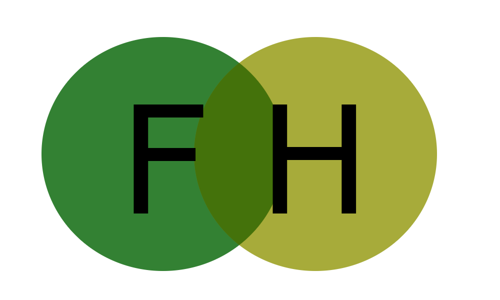
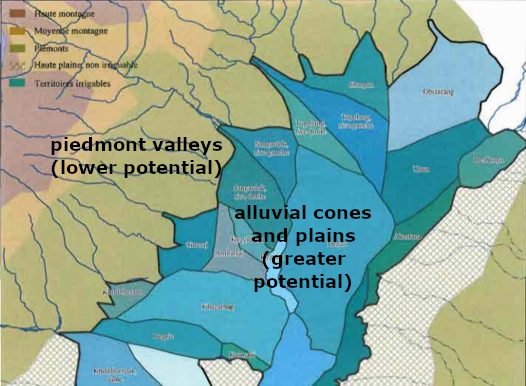
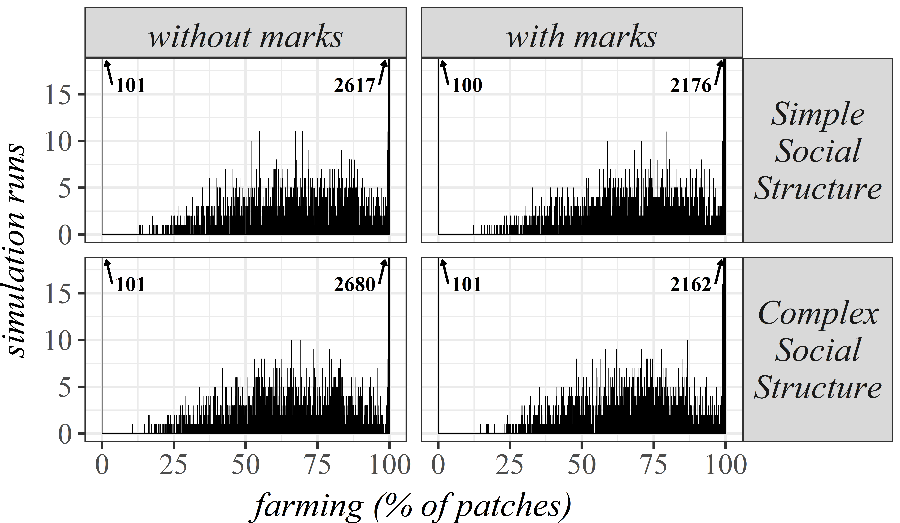
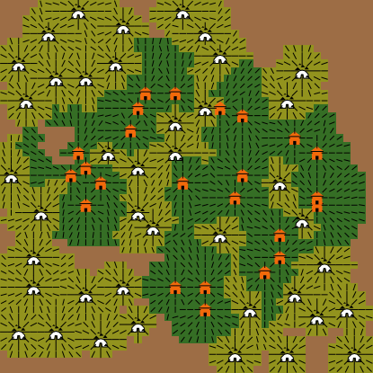
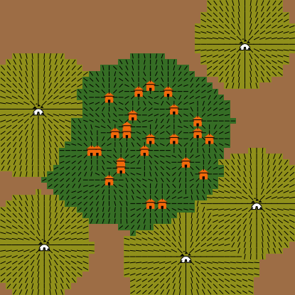
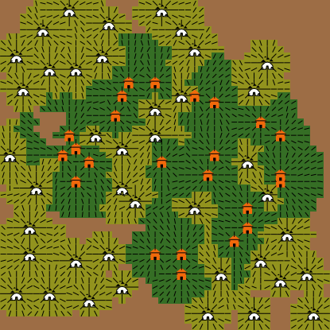
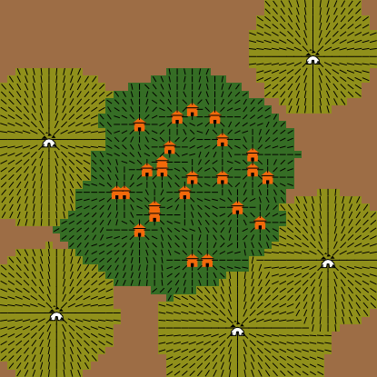

A game of…
chairs, Musical Chairs
A theory-building Agent-Based approach to agro-pastoral landscapes in Eurasia
Andreas Angourakis, Agnese Fusaro, Verónica Martínez Ferreras, Josep M. Gurt Session #672 - CAA @ EAA: Computational Models in Archaeology
available at https://andros-spica.github.io/EAA2018_simulation/


Explaining land use patterns
Land use patterns can be understood as outcomes of a series of contingencies at different scales and different dimensions of human behavior and its environment.


{kind=link}
(NRCS_Photo_Gallery).jpg){kind=link}
{kind=link}

Set of possible states in terms of...
- Proportions
between land use classes - Stability
- Distributions
of land use classes - Centralization
(decision-making) - Specialization
(lifestyles)
- Intensification
(labor, resources) - Development
(productivity, institutions, craftsmanship) - Wealth
accumulation and distribution - Resilience
In preindustrial Eurasia...
Subsistence strategies produced mainly two distinguishable land use classes, farming and herding.
Shades between these may fit in one or another class, depending on the strategies effective impact on the landscape (do they generate/use farms or pastures?).
Implicit models
Separate niches

Interaction is independent of land use
Overlapping niches
Stakeholders must cooperate or compete for land use
Farming
Herding

Stride, S. (2005). Géographie archéologique de la province du Surkhan Darya (Ouzbékistan du sud / Bactriane du nord). Ph.D thesis, Université Paris I Panthéon-Sorbonne.
The separate niche models is not useful!
"Bad" question
Are farming-herding interactions competitive or cooperative?
"Good" questions
Through which mechanisms
and under which conditions may
stakeholders cooperate or compete?
What impact does these aspects have on the existence of certain land use patterns?
Modeling framework

- For exploring several mechanisms
- Land use competition as the core mechanism
- Progressive and modular theory-building approach
Musical Chairs model
- Limited area
- Constant pressure to expand land use classes
- Alternancy between competitive and non-competitive periods
- Competitive situations resolved asymmetrically:
herding stakeholders cannot retain the land while herds are away
Implications of competition
- Strong bimodality
- Bias towards specialized farming economies
Musical Chairs model publications
ANGOURAKIS, A., RONDELLI, B., STRIDE, S., RUBIO–CAMPILLO, X., BALBO, A. L., TORRANO, A., MARTÍNEZ, V., MADELLA, M.; GURT, J. M. 2014, “Land Use Patterns in Central Asia. Step 1: The Musical Chairs Model”, Journal of Archaeological Method and Theory, 21: 405-425. http://dx.doi.org/10.1007/s10816–013–9197–0.
ANGOURAKIS, A. 2014, “Exploring the oases of Central Asia: A model of interaction between mobile livestock breeding and sedentary agriculture”, in Antela-Bernárdez, B. and Vidal, J. (eds.) Central Asia in Antiquity: Interdisciplinary Approaches, BAR International Series 2665, pp. 3-16.
ANGOURAKIS, A., 2016a (February 3). "Musical Chairs" (Version 1). CoMSES Computational Model Library. https://www.openabm.org/model/4880/version/1
Nice Musical Chairs model

- Group dynamics
- Pairing
- Group management
- Pasture tenure
Nice Musical Chairs model

- Group dynamics:
- Herding and farming can coexist in the same group
- cooperation within, competition between
- size x effectiveness = competitive strength
- changing group allegiance
Nice Musical Chairs model
- Pairing:
farming and herding may perform better by being affiliated to the same group
Nice Musical Chairs model
- Group management:
group leadership presses individual stakeholders to collectively pursue a farming/herding ratio
Nice Musical Chairs model
-
Pasture tenure:
open versus restrictive.
Restrictive access means that pastoral land is owned at the group level.
Main results


- Land use competition
+ open access =
bias towards farming - Group competition =
larger groups - Pairing has the smaller effect
- Management add to diversity, assuming group target is arbitrary
- Restrictive access greatly cancels the asymmetry caused by herding mobility
Nice Musical Chairs model publications
Angourakis, A., Salpeteur, M., Martínez, V., and Gurt, J.M. (2017). The Nice Musical Chairs model. Exploring the role of competition and cooperation between farming and herding in the formation of land use patterns in arid Afro-Eurasia. Journal of Archaeological Method and Theory, 21: 405-425. http://dx.doi.org/10.1007/s10816-016-9309-8.
Angourakis, A. (2017, January 9). "Nice Musical Chairs" (Version 5). CoMSES Computational Model Library. https://www.openabm.org/model/4885/version/5
Nomad Frontier model
- Spatial logistics
- Alliance dynamics
Pasture tenure→ Territorial marks
Single-class groups
farming groups or herding groups
Nomad Frontier model
- Spatial logistics:
Spatial relationships are relevant for most processes in the model.
Effects following a general gradient function:

Nomad Frontier model

- Spatial logistics:
- Group centres: reference points for all stakeholders in a group
- Farming centres are fixed; herding centres adapt to group's land use
- Farming centres move only when losing their central patch
Nomad Frontier model
- Alliance dynamics:
- Emerging hierarchical structures
- Production and tribute
- Governance influence
- Affinity
- Alliance formation
Nomad Frontier model

- Alliance dynamics:
-
Emerging hierarchical structures
Groups form alliances, which in turn can also form alliances (complex structures).
Alliances centre is placed in the centre of the most influent group.
Aliances traits depend on the traits of members and their respective wealth.
-
Emerging hierarchical structures
Nomad Frontier model

- Alliance dynamics:
-
Production and tribute
Patches produce goods that sent to its group centre.
Groups and alliances can accumulate wealth and send tribute to their alliance.
Groups and alliances vary in "egoism", i.e. a value defining their tendency to keep their wealth.
-
Production and tribute
Nomad Frontier model

- Alliance dynamics:
-
Governance influence
The influence of groups or alliances over members depends on weath and distance to centre.
Alliance influence also depends on the number of members.
-
Governance influence
Nomad Frontier model

- Alliance dynamics:
-
Affinity
Groups have memory of their affinity to other groups.
Affinity is improved when inside an alliance, decreases with competitive situations, and recovers neutrality with time.
-
Affinity
Nomad Frontier model

- Alliance dynamics:
-
Alliance formation
Autonomous groups and alliances with enough wealth choose among all possible alliances considering mutual influence and affinity.
-
Alliance formation
Nomad Frontier model

- Territorial marks:
Pasture tenure is revisited, given its importance in NMC.
Gradient variation between Open and restrictive access.
Herding groups signal their territory by modifying the landscape in and around their centre (territorial mark).
Every time the centre moves, a new mark is placed.
The mark effect decreases with distance and decay.
Main results

- Bias towards farming is even clearer, presumably because of spatial relations
- Territorial marking (signal) has a milder effect compared to 'restrictive access' (social norm)
- Social complexity, as defined in the model (alliance dynamics), has virtually no effect on the diversity of land use patterns.
Main results

- Distibution of farming centres is important:
increased probability of big oasis if farming centres position is not constrained - Marginalisation of herding groups:
Herding Centre mobility cause them to be 'pushed' more easily
Main results


- Farming predominance linked to centralisation
- ... while herding predominance is associated with more and
more autonomous groups/alliances
$$Autonomy index = {{numAutonomousEntities * numGroups} \over maxNumGroups^2}$$
$$Land use centralization index =$$
$${bigAutonomousEntityTerritory \over {(countAutonomousEntities * meanAutonomousEntityTerritory)}}$$
 



Simulations: 1000 steps (years). Steps shown: 5, 10, and 100 steps intervals up to 1000.
Conclusions
- Land use competition favours farming
- "Big oases" tend to be centralised territories (few groups)
- Any association between farming and herding stakeholders (explored so far) tend to benefit farming in the long run
- The most effective strategy (explored so far) for herding stakeholder is to invest in territorial marks